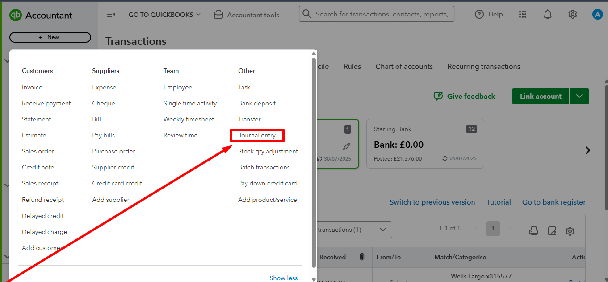
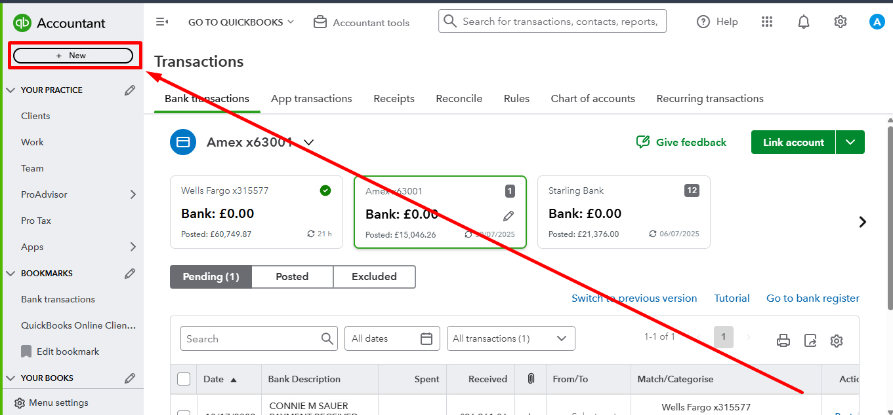
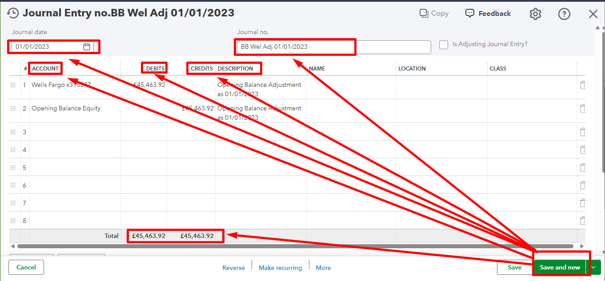
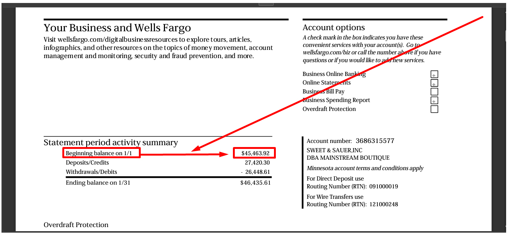
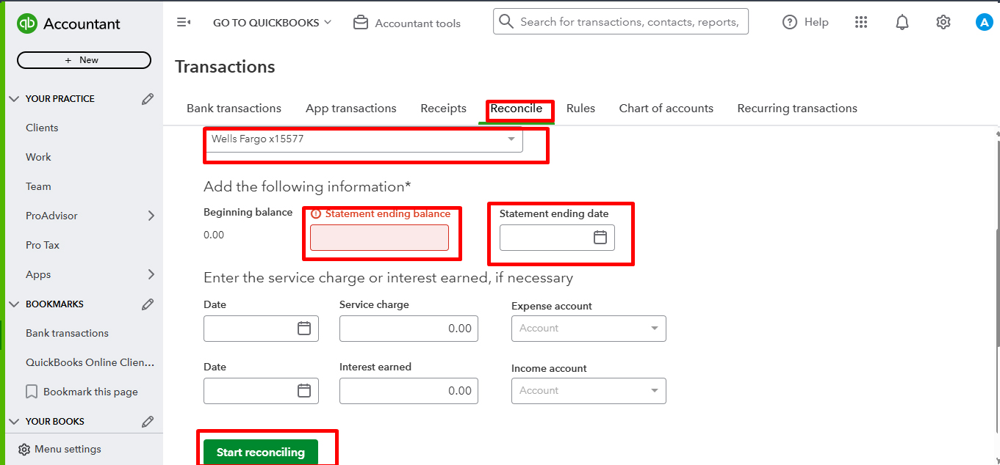
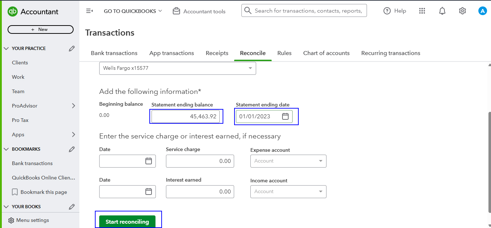
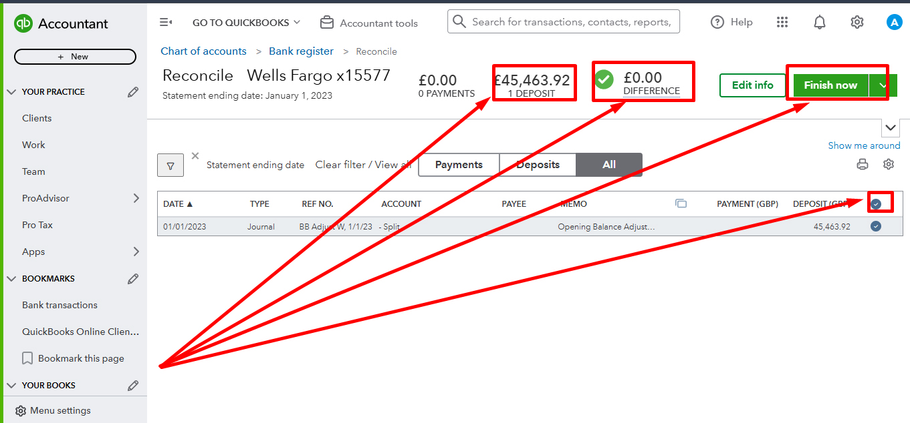
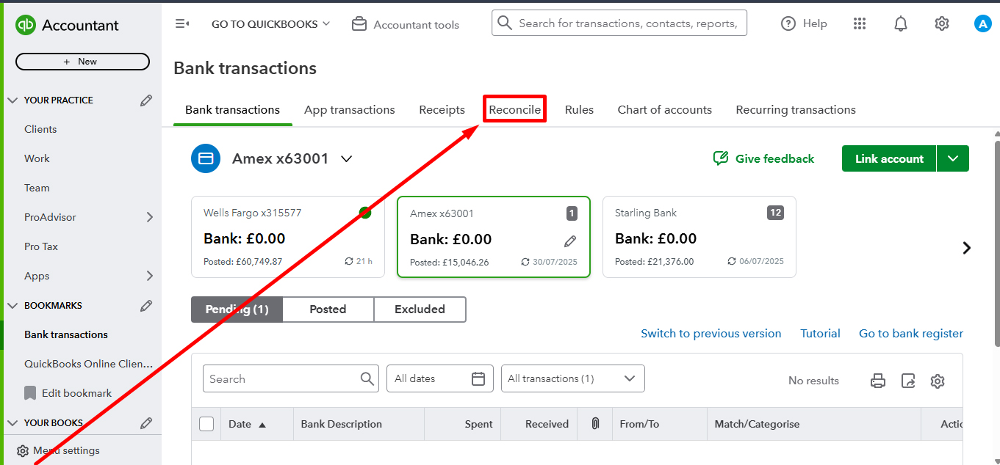

Back to QuickBooks Portfolio

QuickBooks Opening Balance Adjustment
Professional Opening Balance Setup using Journal Entry, Bank Statement Verification and QuickBooks Reconciliation.
Project Overview
This project demonstrates the complete QuickBooks Online Opening Balance Adjustment process. It includes creating journal entries, verifying the beginning balance from the bank statement, entering reconciliation information and completing the first bank reconciliation to ensure accurate financial records.
Skills Used
- ✔ Opening Balance Adjustment
- ✔ Journal Entry
- ✔ Bank Statement Review
- ✔ Beginning Balance Verification
- ✔ Bank Reconciliation
- ✔ Financial Accuracy
- ✔ QuickBooks Online
- ✔ Accounting Setup
Project Screenshots







